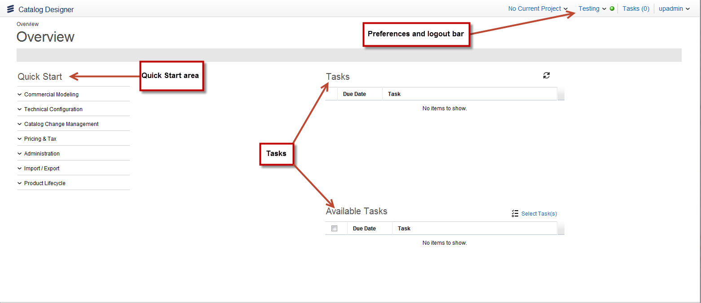
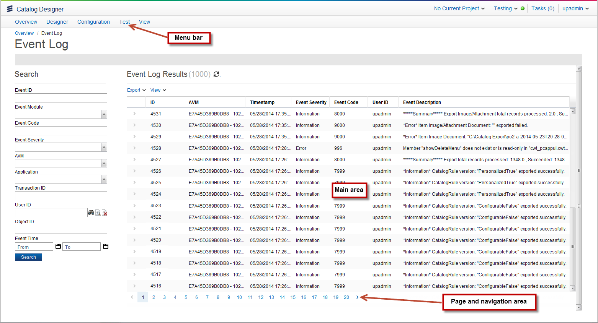
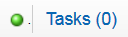
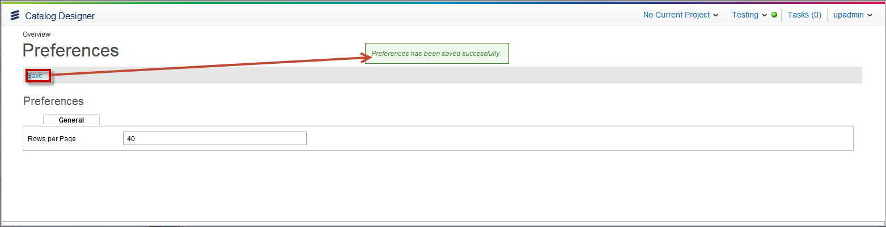
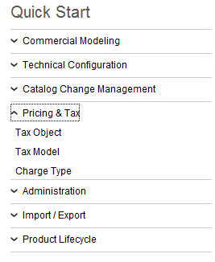

Catalog's User InterfaceThe Catalog application's main page contains the following elements:  Within Catalog, the following user interfaces elements are available:  Preferences and Logout BarThis section contains the following components:
Current ProjectThe top right corner of the user interface shows the current project that you have opened. When you do not have a project opened, No Current Project appears in the bar. Otherwise, the name of your project that you have opened appears in this area (for example, Current Project: SummerSale). Clicking the Current Project area from the bar shows the following options in the drop-down menu:
Testing ModeClicking Testing from the top right corner of the user interface allows you to view and test changes that you have made to your catalog. You can click whether you want testing mode to be on or off by making the selection from the Testing drop-down menu. Indication of Logged-in UserThe top right corner of the user interface shows who has logged in to the application. In this example, upadmin is logged in. Number of Assigned Tasks and User Availability for Task AssignmentThe top right corner of the user interface shows the number of tasks (Tasks (number)) currently assigned to the logged-in user. It also shows whether the current user is available for task assignment.  In this example, the upadmin user has no tasks assigned. The green circle indicates that this user is available for task assignment. For information on this feature, see the Number of Assigned Tasks and User Availability for Task Assignment section in the Worklist Management User Guide. Application PreferencesClicking your username in the right corner, and then selecting Preferences from the drop-down menu allows you to specify the number of rows shown on a page. To change the rows per page, complete these steps:
 Switch ApplicationsYou can switch applications by clicking your username in the right corner, and then selecting Switch from the drop-down menu. This selection closes the application and returns you to the Select Application page. There are two types of Select Application pages:
See the Select Application Page: Classic and Icon section in the Velocity Studio User Guide for more information. LogoutClick the Logout hyperlink to end your current session. To log back in, click the Click to Login or Login button, depending on whether you are using the classic or tiled version of the Select Application page. Quick StartThe Quick Start section of the main page contains a list of shortcuts that takes you to various pages. These shorcuts are a list of operations that are available in the menu bar and to you based on your user privileges. You can expand the main headings and then click the object that you want. The following example shows the objects that you can select from Pricing & Tax:  TasksThe tasks area displays tasks that are assigned to you, as well as available tasks that you can do. A user Task is created by either a menu item action or a process activity. Tasks that are assigned to a user are then available in the user's worklist until a task action is performed, at which time the task moves to the worklist archive. These tasks are defined and assigned outside of Catalog and are only displayed in Catalog. For more information on tasks, refer to the Velocity Studio User Guide's Worklists and User Tasks at Runtime section. Menu BarThe menu bar contains the following options: Main AreaThe main area appears under the menu bar, which contains information pertaining to the page that you are on. For example, the Event Log allows you to specify search criteria. Both the search critiera and your search results appear in the main area of the page. Page and Navigation AreaThe main area appears at the bottom of the page where you can perform the following tasks:
|